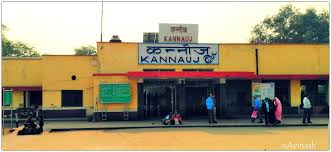

The city is served by two major railway station Kannauj railway station and Kannauj City railway station. 22443/Kanpur - Mumbai Bandra (T.) (Weekly) SF Express passes through Kannauj railway station on the way from Kanpur Central railway station to Farrukhabad Junction railway station at evening 7:30 PM every Wednesday . Return train reaches at 5:52 AM .  Kannauj railway station is a proposed railway station in Kannauj district, Uttar Pradesh. Its code is KJN. It will serve Kannauj city. The station consists of 2 platforms.